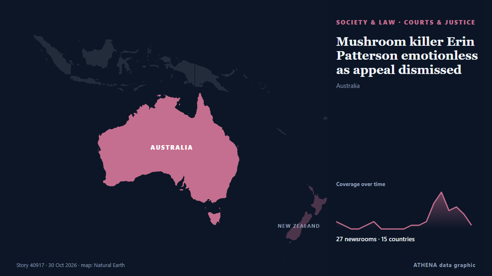

Mushroom killer Erin Patterson emotionless as appeal dismissed

Mushroom killer Erin Patterson is likely to die behind bars after Victoria’s Court of Appeal quashed her bid to overturn her triple murder conviction. من Sydney Morning Herald
نشرته بشكل مستقل 28 مصدرًا في 15 دولة منذ 28 أكتوبر، وأول من نشره The Guardian؛ والتغطية تتراجع. يقدّر ATHENA الخطر بأنه معتدل (3.2/10)، ويعود ذلك أساسًا إلى خطورة الضرر الموصوف ونطاقه الجغرافي والقطاعي. الثقة 90٪ (مرتفعة)، وعدد المصادر المستقلة المؤكِّدة: 28، بمتوسط موثوقية للمصادر يبلغ 74٪. وسائل الإعلام حسب البلد: أستراليا (12), المملكة المتحدة (9), ماليزيا (3). التغطية: من 28 أكتوبر إلى 30 أكتوبر، 52 ساعة.
لماذا يهم: تغيّر التعديلات القانونية والسياسية الحقوق والواجبات والخدمات العامة لمن تشملهم.
ما الذي تغيّر: 32 تقارير جديدة من 24 غرف أخبار خلال 24 ساعة حتى 30 أكتوبر.
تُعرض العناوين بالإنجليزية كما نُشرت.
نظرة سريعة
اختير وقُيِّم وكُتب وفق منهجية ATHENA المنشورة. لا يتدخل أي محرر في الأحداث بعينها. كيف يُنتَج ›
| 28 Oct 04:30 UTC | 2 |
|---|---|
| 28 Oct 07:30 UTC | 1 |
| 28 Oct 10:30 UTC | 0 |
| 28 Oct 13:30 UTC | 0 |
| 28 Oct 16:30 UTC | 1 |
| 28 Oct 19:30 UTC | 2 |
| 28 Oct 22:30 UTC | 0 |
| 29 Oct 01:30 UTC | 0 |
| 29 Oct 04:30 UTC | 0 |
| 29 Oct 07:30 UTC | 0 |
| 29 Oct 10:30 UTC | 1 |
| 29 Oct 13:30 UTC | 1 |
| 29 Oct 16:30 UTC | 2 |
| 29 Oct 19:30 UTC | 7 |
| 29 Oct 22:30 UTC | 10 |
| 30 Oct 01:30 UTC | 5 |
| 30 Oct 04:30 UTC | 6 |
| 30 Oct 07:30 UTC | 4 |
| 30 Oct 10:30 UTC | 1 |
| 30 Oct 13:30 UTC | 0 |
| 30 Oct 16:30 UTC | 0 |
| 30 Oct 19:30 UTC | 1 |
| 28 Oct 04:43 UTC | 0.0 |
|---|---|
| 28 Oct 08:06 UTC | 2.1 |
| 29 Oct 21:09 UTC | 3.2 |
| 30 Oct 19:58 UTC | 3.2 |
لماذا هذه الأرقام
الأهمية
الخطر
الثقة
التغطية — من نشر الخبر ومتى
العنوان كما نُشر · يفتح الأصل- The Guardian · المملكة المتحدةErin Patterson to learn fate in appeal against mushroom murders convictions
- ABC News Australia · أسترالياMushroom killer Erin Patterson's appeal decision set for Friday
- IOL · جنوب أفريقياJudges set to rule on Australian mushroom killer's appeal
- Stuff · نيوزيلنداKiwi star to play Australia’s mushroom murderer in TV drama
- RNZ National · نيوزيلنداKiwi Melanie Lynskey to play mushroom murderer Erin Patterson in new series
- New Straits Times · ماليزياJudges set to rule on Aussie mushroom killer's appeal
- ABC News Australia · أسترالياTriple-murderer Erin Patterson to learn her appeal fate today
- The Guardian · المملكة المتحدةErin Patterson to die in prison after losing appeal against mushroom murder convictions
- Sydney Morning Herald · أسترالياMushroom murderer Erin Patterson to learn her fate
- Gulf News · الإمارات العربية المتحدةAustralian mushroom killer Erin Patterson awaits appeal ruling
- CNA (Channel NewsAsia) · سنغافورةJudges to rule on Australian mushroom killer's appeal
- Sky News (World) · المملكة المتحدةMushroom killer must never be released from prison, court says
- The New York Times (World) · الولايات المتحدةCourt Rejects Erin Patterson’s Appeal in Mushroom Murders Case
- SBS News · أسترالياErin Patterson to learn fate as appeal handed down in mushroom murders case
- The Guardian · المملكة المتحدةAustralia’s mushroom murderer loses bid to overturn convictions – as it happened
- ABC News Australia · أسترالياErin Patterson loses appeal, has harsher sentence imposed — as it happened
- Sydney Morning Herald · أسترالياErin Patterson appeal as it happened: The ruling on the mushroom cook’s appeal and what it means for her future behind bars
- ABC News Australia · أستراليا'Cold and calculating' Erin Patterson has sentence increased
- ABC News Australia · أسترالياPatterson's failed appeal leaves few legal avenues for the mushroom killer
- SBS News · أسترالياMushroom murderer Erin Patterson to spend rest of life in prison after losing appeal
- Sydney Morning Herald · أسترالياMushroom killer Erin Patterson to die in prison after appeal spectacularly backfires
- New Straits Times · ماليزياAustralian mushroom murderer loses appeal
- The Irish News (Belfast) · المملكة المتحدةMushroom poisoner Erin Patterson will never be released, Australian court orders
- Sydney Morning Herald · أسترالياMushroom killer loses appeal
- RTÉ News · أيرلنداMushroom killer loses appeal, given harsher sentence
- Free Malaysia Today · ماليزياAustralian mushroom killer loses appeal, has sentence extended
- BBC News · المملكة المتحدةMushroom murderer fails to overturn convictions in Australian court challenge
- BBC News · المملكة المتحدةWatch: Why Australia's mushroom murderer may now die in prison
- MyJoyOnline · غاناAustralian mushroom murderer loses appeal and gets harsher sentence
- Arab News · المملكة العربية السعوديةAustralian court orders Erin Patterson never to be released from prison for mushroom poisonings
- CBC News (alternative feed) · كنداAustralian court says mushroom poison murderer should never be released from prison
- The Independent · المملكة المتحدةMushroom killer Erin Patterson loses appeal as top court says she will die in prison for ‘shocking’ crimes
- FBC News · فيجيAustralian mushroom murderer Erin Patterson loses appeal bid
- Belfast Telegraph · المملكة المتحدةMushroom poisoner Erin Patterson will never be released, Australian court orders
- ABC News (International) · الولايات المتحدةCourt orders Erin Patterson never to be released from prison for mushroom poisonings
- IOL · جنوب أفريقياErin Patterson: Australian mushroom murderer loses appeal, faces dying in prison
- News of Bahrain · البحرينAustralian Court Rejects Mushroom Killer's Appeal, Imposes Life Sentence
- Al Jazeera English · قطرAustralian court rejects ‘mushroom murderer’ Erin Patterson’s appeal
- TheJournal.ie · أيرلنداAustralian woman who killed three family members with mushrooms to die in jail after appeal rejected
- Sydney Morning Herald · أسترالياMushroom killer Erin Patterson emotionless as appeal dismissed